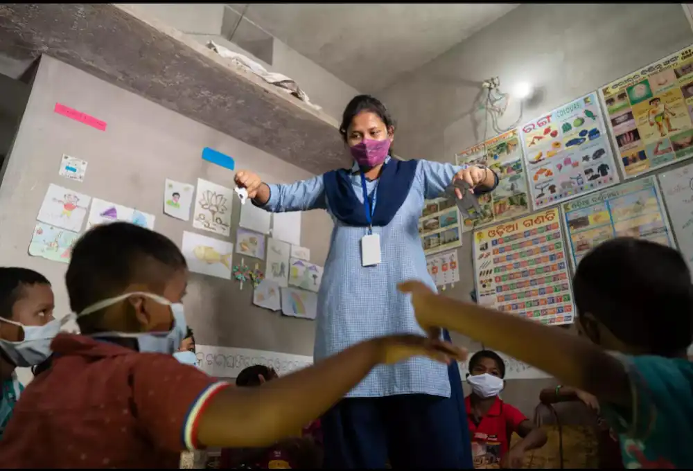

A global humanitarian organization committed to creating lasting change through community-driven programs and transparent impact.

In 2008, Dr. Miriam Osei witnessed the aftermath of flooding in Ghana that left 40,000 people without shelter, food, or medical care. With $5,000 of personal savings and five volunteers, she launched STACKLY.
Today, STACKLY operates in 32 countries, employs over 1,200 staff, and mobilizes 12,400 volunteers annually. We've remained true to our founding principle: every person deserves dignity, opportunity, and access to care.
To alleviate suffering, reduce inequality, and build resilient communities by delivering high-impact programs in education, healthcare, environment, and emergency relief — guided by transparency, local leadership, and measurable results.
A world where every person — regardless of nationality, gender, or socioeconomic status — has access to quality education, essential healthcare, and the opportunity to live a dignified, fulfilling life.
Integrity, compassion, accountability, and inclusion are not just words to us — they are the criteria by which we make every decision, from how we spend donor funds to how we hire staff in the field.
Community-led and data-driven. We work alongside local partners, not above them. Every program is designed with its beneficiaries, evaluated rigorously, and adapted based on real-world feedback.
Experienced humanitarians, policy experts, and community builders united by a common mission.
From a grassroots rescue operation to a globally recognized NGO.